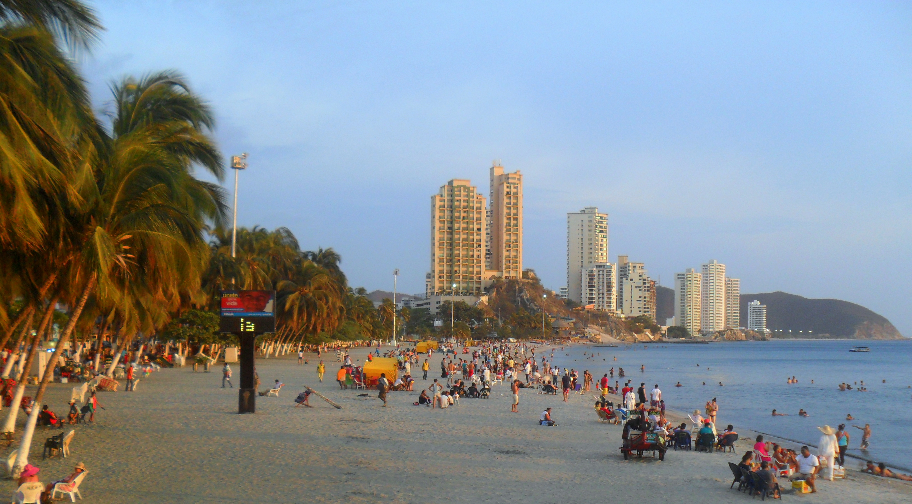

Santa Marta, oficialmente Distrito Turístico, Cultural e Histórico de Santa Marta, es la capital del departamento del Magdalena. Fundada el 29 de juliol de 1525 per el conqueridor espanyol Rodrigo de Bastidas, és la ciutat més antiga existent de Colòmbia i la segona més antiga de Sud-amèrica.
El mar Carib i la neu es troben per fer de Santa Marta, Colòmbia un destí difícil d’oblidar. La ciutat està situada a la vora de la badia de Santa Marta sobre el mar Carib, en els contraforts de la Serra Nevada, els pics es poden veure en dies clars des de la platja. La capital del departament colombià del Magdalena, que va ser fundada el 1525, és una de les ciutats més antigues de Sud-amèrica.
Santa Marta, Colòmbia és la ciutat més antiga d’Amèrica del Sud és plena d’una màgia difícil de descriure, el seu patrimoni arquitectònic inigualable, bells paisatges i un gran llegat cultural amb els seus tresors colonials, fan d’aquest paradís natural una destinació ideal per gaudir, conèixer i recordar.
